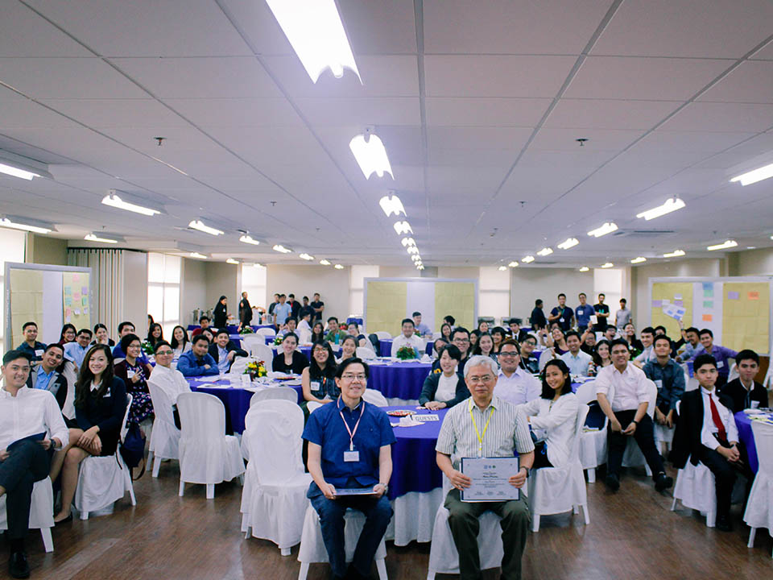

Bagumbayani is an organization that aims to tap into the inherently immense potential, creativity, and innovation of the youth and harness it towards nation building by promoting careers in government and civil service, and by connecting them with professionals heavily involved in the fields of their interests and passions.
What is Bagumbayani and what do we do?
Inform the community about current developments and working opportunities in civil service
Immerse individuals into civil working environments and connect them with competent, experienced professionals for training and mentoring
Inspire students to become future nation-builders and leaders and follow a career in civil service
Why should people join Bagumbayani?
Working in civil service or government is both a practical and meaningful career option that caters to many interests and professions. It is a way of integrating your passions and answering the call for society’s most pressing needs, and is a sustainable means for nation building. Join if you want to learn more on developing a career in government and civil service and if you want to be well-connected with some of our country’s greatest minds solving some of our biggest problems.

Vision
Foster an Ateneo community that (1) is critically literate on the opportunities, realities, and experiences of working in government and (2) actively considers civil service as a viable, meaningful career and as a means for nation building.
Mission
Advocating positive change in government through the involvement of youth by (1) inspiring students to engage in civil service, (2) addressing public concerns and biases against working in government (3) providing internship and recruitment opportunities.
 Passionately made by User Experience Society
Passionately made by User Experience Society